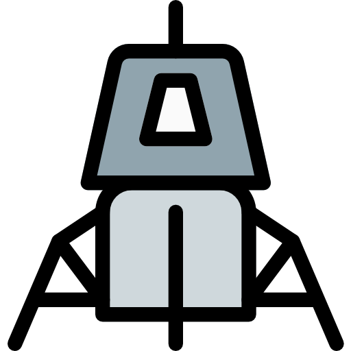

<!DOCTYPE html>
<html>
<head>
    <link rel="stylesheet" href="leaflet.css"/>
    <link rel="stylesheet" href="leaflet-search-master\dist\leaflet-search.src.css">
    <script src="leaflet.js"></script>
    <script src="https://cdnjs.cloudflare.com/ajax/libs/PapaParse/5.3.0/papaparse.min.js"></script>
    <script src="https://code.jquery.com/jquery-3.6.0.min.js"></script>
    <script src="leaflet-search-master\dist\leaflet-search.src.js"></script>
    <style>
        html, body {
            height: 100%;
            margin: 0;
        }

        body {
            display: flex;
            align-items: center;
            justify-content: center;
        }

        #map {
            height: 100%;
            width: 100%;
        }
    </style>
</head>
<body>
<div id="map"></div>
<script>
    // center map and set the bounds and max zoom for display
    var map = L.map('map', {
        center: [0, 0],
        maxBounds: [
            [-90, 180],
            [90, -180]
        ],
        zoom: 2
    });
    // set max and min Zoom for map
    map.setMaxZoom(12)
    map.setMinZoom(2);

    // set the base layer (picture) for the map
    var baselayer = new L.tileLayer('https://s3.amazonaws.com/opmbuilder/301_moon/tiles/w/hillshaded-albedo/{z}/{x}/{y}.png', {
        tms: true,
    }).addTo(map).setZIndex(0);

    //Anthropogenic objects dataset
    // Get the json for the objects for the map
    var geojsonLayer;
    $.getJSON('output.geojson', function (data) {
        geojsonLayer = L.geoJSON(data, {
            pointToLayer: function (feature, latlng) {
                return L.marker(latlng, {
                    icon: customIcon,
                });
            },
            onEachFeature: function (feature, layer) {
                layer.bindPopup(
                    //create the popups for the objects on the map
                    '<div class="popup-content-objects">' +
                    '<h3 class="data_name">' + feature.properties.SHORT_NAME + '</h3>' +
                    '<p class="object">' + feature.properties.OBJECT + '</p>' +
                    '<p><b>Mission:</b> ' + feature.properties.MISSION + '</p>' +
                    '<p><b>Coordinates:</b> [' + feature.properties.LATITUDE.toFixed(3) + ', ' + feature.properties.LONGITUDE.toFixed(3) + ']</p>' +
                    '</div>',
                );
            }
        }).addTo(map); // add the objects on the map

        //Search control function
        var searchControl = new L.Control.Search({
            layer: geojsonLayer,
            propertyName: 'SHORT_NAME',
            zoom: '10',
        });
        map.addControl(searchControl);

        //Map Scale
        L.control.scale({position: 'bottomright'}).addTo(map);
    });

    //Create custom icons for the objects on the map
    var customIcon = L.icon({
        iconUrl: 'icon.png',
        iconSize: [30, 30],
        iconAnchor: [10, 10],
        popupAnchor: [15, 0]
    });

    //Landing sites data
    fetch('results_featured_sites_180.csv')
        .then(response => response.text())
        .then(csvData => {
            Papa.parse(csvData, {
                header: true,
                dynamicTyping: true,
                complete: function (results) {
                    console.log('Parsed CSV data:', results.data);
                    addMarkers(results.data);
                },
                error: function (error) {
                    console.error('Error parsing CSV:', error);
                }
            });
        })
        .catch(error => {
            console.error('Error fetching CSV:', error);
        });

    //Add icon for the landing sites on the map
    var blackIcon = new L.Icon({
        iconUrl: 'blackmarker.png',
        iconSize: [30, 30],
        iconAnchor: [18, 30],
        popupAnchor: [1, -34]
    });

    // Function for adding the custom markers on the map
    function addMarkers(data) {
        for (var i = 0; i < data.length; i++) {
            if (data[i].Latitude !== undefined && data[i].Longitude !== undefined) {
                var marker = L.marker([data[i].Latitude, data[i].Longitude], {icon: blackIcon})
                    .bindPopup(
                        '<div class="popup-content-markers">'
                        + '<h3  class ="data_name"><b>' + data[i].Name + '</b></h3>'
                        + '<p class="latlon"> <b>Coordinates:</b> ' + '[' + data[i].Latitude.toFixed(3) + ', ' + data[i].Longitude.toFixed(3) + ']</p>'
                        + '<p class="country"> <b> Result of: </b> ' + data[i].Country + '</p>'
                        + '<p class="description">' + data[i].Description + '</p>'
                        + '</div>'
                    )
                    .addTo(map); // add markers to map
            } else {
                console.error('Invalid LatLng object at index ' + i + ': Latitude or Longitude is undefined.');
            }
        }
    }

    //Legend
    var legendAnthropogenic = ' Anthropogenic Object';
    var legendSites = 'Landing Site';
    var legend = L.control({position: 'bottomleft'});

    legend.onAdd = function (map) {
        var div = L.DomUtil.create('div', 'info legend');
        div.style.backgroundColor = 'white'; // Set the background color
        div.innerHTML +=
            '<div style="background-color: #fff; padding: 10px;">' + legendAnthropogenic + '</div>' +
            '<div style="background-color: #fff; padding: 10px;">' + legendSites + '</div>';
        return div;
    };

    legend.addTo(map);

</script>
</body>
</html>
